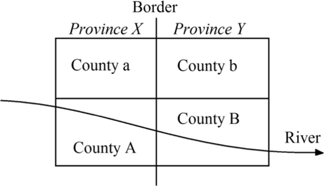
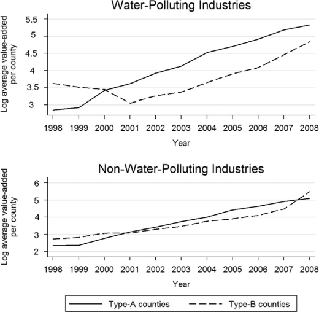
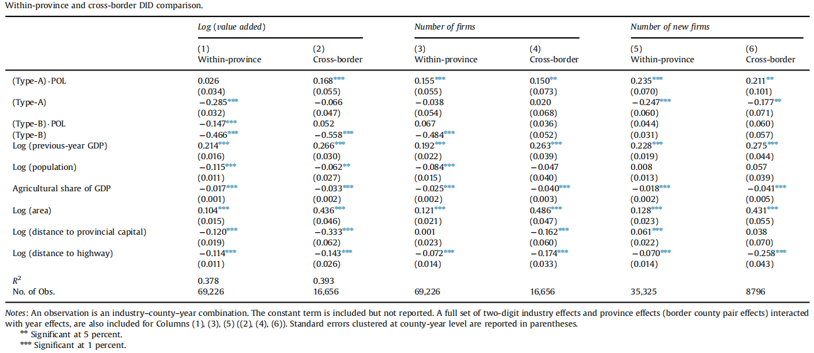
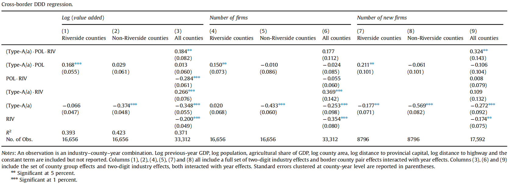
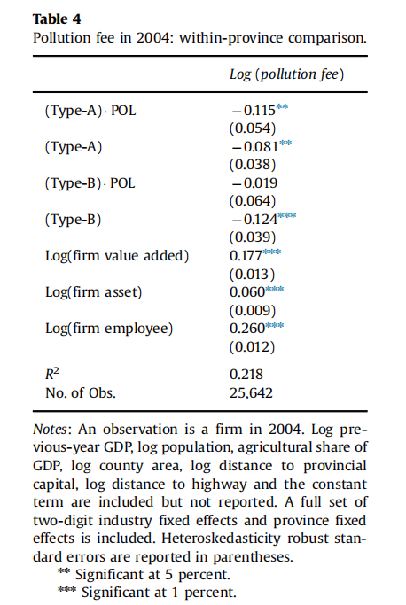

把污染转嫁给你的“邻居”
2020-08-09
Paper: Cai, Hongbin, Yuyu Chen, and Qing Gong, "Polluting thy neighbor: Unintended consequences of China's pollution reduction mandates," Journal of Environmental Economics and Management, 76 (2016), 86–104.
I thank Professor Ye'an ZHOU for insightful comments on this introductory article.
This article can also be found here: https://mp.weixin.qq.com/s/c0qGLOD2s5Jik7YNIPuhFA
1、导论
在过去的30年中，中国取得了举世瞩目的高速增长。但不可否认的是，相伴而来的是严重的环境污染，其中，河流污染尤为严重。跨入21世纪以来，中央政府对于环境污染问题的重视程度进一步提高。在2001年发布的第十个“五年计划”中，中央政府首次将环境保护和减少污染列入了国家战略目标清单，每个省都有一个特定的污染治理目标，能否实现这些目标则成为地方官员绩效考核的一个重要指标。
看似目标明确、因地施策的政策却没有收到好的效果，在1991年至2005年的15年间，中国的水质几乎没有改善(World Bank, 2006)。因此，本文从这一背景出发，研究了在中央政府2001年实施的政策之后，污染分布与地方政府行为的变化。作者利用三重差分法(DDD)研究了1998年至2008年间中国24条主要河流流经区县的行业分布与生产活动，发现自从2001年以来，一个省处于河流最下游的区县的污染性生产活动比其他区县增加了20%；同时，本文发现，这一现象正是由于地方政府影响本地环保局的执法力度而产生的。地方政府“策略性”地在最下游区县营造出了宽松的监管环境，从而实现将污染程度大的企业转移到处于河流最下游的区县。
2、政策下的地方政府行为
(1)环境保护的监管结构
在我国环境保护的监管结构中，地方环保部门受到“条块”委托代理的双重领导。中央的环保政策由中央环保部门下达到地方环保局，由地方环保局具体执行，地方环保局受到中央环保部门的检查和技术上的指导，这就是环境治理中的“条领导”，形成了环保的纵向分权。同时，地方环保局又隶属于当地政府，在人员编制和经费预算上受到地方政府的约束，这就形成了“块领导”。地方政府其他部门与环保局之间也存在着行政资源的分配与环保权利责任的划分，即环保横向分权。不同于纵向分权，横向分权主要体现为地方政府支持环境保护的意愿和对环保工作的支持力度。因此，地方政府有能力影响地方环保局的监管行为。具体而言，地方政府可以通过减少对环保局提供的支持，迫使地方环保局降低对企业制定的标准与监管力度。这体现了我国环境保护监管结构的一个重要的特征，即地方环保局往往会受到地方政府的强控制。
(2)2001年新政
2001年的第十个“五年计划”要求到了2005年底将污染物排放量减少10%，这是中国政府第一次将环境保护提升为如此之高的战略目标。随后，国家发改委将这一笼统的目标进行了详细的规划。发改委将主要河流的污染治理工作与减排目标细分到了河流流经的每个省上，给每个省制定了不同的减排任务，因此作者在分析时，也将目光聚焦到了这些主要河流上。从此时起，地方官员面临着污染治理和经济发展这两个有着一定冲突的绩效考核指标之间的权衡取舍。
2001年新政的一个重要特点，是没有专门设立出一套用于污染治理的跨省协调机制。具体而言，尽管国家发改委因地制宜地分配了地方污染治理的任务和目标，却没有规划各地政府如何共同努力以实现这一目标。因此，当地方政府进行决策时，其行为对其他省造成的负外部性并不会纳入其考虑范围，从而很可能会导致污染治理的无效率。这一点成为后文分析地方政府行为时，极其重要的一个局限条件。
(3)地方政府行为
2001年制定的环保政策给省级政府增加了环境污染成效的考核指标，从而对于省级政府提供了治理污染的激励。然而，由于地方政府同时面临着经济发展的目标引导，作为理性主体的地方政府，便开始思考如何在不损害经济增长的条件下减少污染。对于河流的污染，大部分是一些污染性的生产行为导致的，如果将这些污染企业关闭，那么对于省内的经济发展会产生不利影响。在缺乏专项省际协调机制的情况下，既然对于其他省的污染不会对本省产生直接的成本，那么为什么不尝试着把污染转嫁给其他省呢？如果能够将污染性企业搬到位于河流最下游的区县中，那么其产生的污染会随着河流流向了其他省份，对本省几乎没有影响，但是这些污染性生产行为的产出却是本省GDP的一部分，正是两全其美。而如何将污染性企业搬到最下游区县，是随之而来的问题。如果地方环保局能够降低在最下游区县的执法力度，从而降低污染企业的治污成本，那么就可以通过市场的力量实现污染性企业的转移。然而，经济增长并非地方环保局本身的目标，作为理性主体的地方环保局，在其独立决策下，并不会做出这样的行为。于是，对地方环保局拥有强控制的地方政府，便需要干预地方环保局的行为，因此，如果能够观察到了地方环保局执法力度的差异，那么就获得了地方政府“策略性”污染的重要证据。
如果从个体进行分析，这种做法似乎为地方政府同时带来了经济增长和污染治理的成果。但从整体而言，如果各个地方政府都采用了这种策略，那么只会产生“A污染B，B污染C，C污染D”的结果。现实中也确实如此。到了2005年检验“五年计划”成效的时候，大家发现当初设定的其他目标都轻松达到了，但污染治理的预期目标却远远没有实现，甚至某些污染物显著增加了。
在这个故事中，作者重点关注的是：(i)第十个“五年计划”期间，是否真的出现了“下游效应”(downstream effect)？(ii)如果出现了，地方政府是否真的是通过控制地方环保局的执法行为导致的？这两个问题成为了下文研究的核心。
3、“下游效应”的实证研究
(1)模型设定
这部分的内容主要是通过实证分析识别和衡量上文所说的“下游效应”。本文预期在2001年新政之后，各省最下游区县的污染水平将上升，但实证研究遇到的最大的挑战，是排除区县之间其他因素的影响，从而得到精确的下游效应。为了实现这个目标，本文作者采用了三重差分法(DDD)。
为了更好的说明文章的分析策略，作者用一张图详细的描述了其分析方法，如下图所示。

作者假设了一条从西向东流的河流，穿过上游省份X中最下游的县A和下游省份Y中最上游的县B。县a与县A相邻，县b与县B相邻。但是县a和县b的区别在于，这两个县不是滨河县；不过，这两个县分别有着与县A和县B类似的地理特征。
文章的实证策略分为三步，首先是比较县A和县B非水污染行业和水污染行业之间的差异，这一步是标准的双重差分法(DID)。其中，在同一个县内，非水污染行业是对照组，水污染行业是实验组。但是一个县的自然特征本身就可能导致该县的行业分布情况，因此还需要另一个额外的维度来识别出真正的下游效应。
因此，在第二步中，本文对非滨河县(即县a和县b)进行DID分析。在第三步中，本文将第一步中在滨河县捕捉到的效应与第二步中在非滨河县捕捉到的效应进行对比，最终得到了真正的下游效应，这便实现了三重差分法(DDD)的分析。
作者构造了如下的回归方程： $$\begin{aligned} Y_{ijt} =& \beta_0 + \beta_1 DOWN_j + \beta_2 RIV_j + \beta_3 POL_i \cdot DOWN_j + \beta_4 POL \cdot RIV_j + \beta_5 DOWN_j \cdot RIV_j \\ &+ \beta_6 POL_i \cdot DOWN_j \cdot RIV_j + \beta_7 X_{jt} + \eta_{it} + \delta_{jt} + \varepsilon_{ijt} \end{aligned}$$ 其中，下标$i$、$j$和$t$分别代表行业，县和时间，而被解释变量是时间$t$县$j$中行业$i$的活动情况。$DOWN_j$是县虚拟变量，如果该县是省的最下游县(如县A和县a)，那么该虚拟变量取1；否则(如县B和县b)取0。$RIV_j$是另一个县虚拟变量，如果河流流经该县(如县A和县B)，那么该虚拟变量取1；否则(如县a和县b)取0。$POL_i$是判断是否为水污染行业的虚拟变量，如果是则取1，否则取0。除此之外，$X_{jt}$是一组控制变量，$\eta_{it}$是可随时间变化的行业效应，$\delta_{jt}$是可随时间变化的省效应，最后的$\varepsilon_{ijt}$是随机误差。$\beta_6$是模型中最关心的参数，它是这套模型所分析出来的准确的下游效应。
(2)数据及来源
作者构造了一个8年的样本进行分析，从2001年至2008年，每年共有超过4000个观测值。每个观测值中包含一年中一个县的两种行业的信息：生产活动、企业数量、新增企业数量、是否为水污染行业、县的类型(A、B、a、b)以及其他特征。
其中，企业相关的数据来源于国家统计局的“规模以上工业企业年度调查(Annual Survey of Above-Scale Industrial Firms)”。县的地理区域位置为作者自己测算，作者根据上文中描述的县A、县B、县a和县b的标准进行区分，并且对数据进行了筛选，比如如果某一区域四种类型的县均没有某个行业，那么就将这一区域从样本中排除，以免产生过多为0的观测值。县的其他变量，如GDP、人口数、土地面积等来源于《中国区域年鉴》；作者还利用中国国道年度地图计算了县中心到国道的距离，从而衡量陆运的便利性。
在进行DDD分析之前，本文首先从图形上简单观察了县A与县B水污染行业企业与非水污染行业企业之间的差异，如下图所示。

从图形上看，显然，从2001年以来，县A和县B非水污染行业的产值几乎相同，但是县A的水污染行业的产值却明显高于县B，即使其中还存在很多干扰因素，但这也在一定程度上表明了下游效应很可能是存在的。
(3)实证结果分析
下面本文进行上文所说的第一步。这一步中，本文进行两种样本的回归，第一个样本中除了上文描述的县A、县B、县a和县b，还包含了并非位于省的边界上、而是位于省的内部的县(下文称为“内部县”)，回归结果显示在表格的奇数列；第二个样本中不包含这些内部县，回归结果显示在偶数列。

从第(1)列来看，可以发现，与内部县相比，县A和县B的总产值均显著要低，但是县A水污染行业的产值要比非水污染行业的产值高2.6个对数点(虽然不显著)，县B水污染行业的产值比非水污染行业的产值低14.7个对数点。在第(3)列、第(5)列的企业数量和新增企业数量中也能看到了类似的规律，这实际上支持着下游效应的存在。但是，如同上文所述，不同县的自然属性本身就可能导致这些差异，因此加入内部县进行考察未必是一个合适的做法。于是，本文缩减样本数量，仅仅留下那些更加直接的“邻居”(就像前文画出的示意图那样)，这些县的地理空间属性会更加接近。从第(6)列可以看出，与县B相比，县A水污染行业的产值比非水污染行业的产值增加了16.8个对数点。企业数量和新增企业数量也类似。这进一步支持本文的预期结论，但是依然存在缺陷，于是作者进一步考虑DDD分析，下表汇报了DDD的结果。

第(1)列汇报了滨河县DID的结果，和前文是一致的；第(2)列汇报的则是非滨河县的DID结果，这说明与县b相比，县a的水污染行业的产值与废水污染行业的产值并没有显著的差异。第(3)列汇报了最终DDD的结果，在保持其他条件不变的情况下，作者测算出了显著的下游效应，为18.4个对数点。第(4)-(6)列汇报了以企业数量作为被解释变量的DDD结果，可以发现，与县B相比，县A大约多出0.18家水污染行业企业，这与样本均值3.2家相比，增长了6%(尽管这一结果p值为0.114，但作者在脚注中解释了这一p值高估了犯错概率的原因，实际上应当视为显著，这部分在本推文中不进行赘述)。新公司的增加数量也呈现出类似的规律，县A水污染行业企业的新增数目比县B多出0.32家，达到了样本均值1.58家的20%。综上，本文利用三重差分法证明了下游效应的存在。
4、对地方政府行为的探究
在前文中，本文通过实证分析验证了下游效应的存在。下面，本文进一步通过分析环保执法力度的差异，来反映地方政府的行为。根据前文第2部分的分析，作为理性主体的环保局，经济发展并非其追求的目标，因此地方环保局本身没有动机改变在不同地方的执法力度。如果能够观察到了地方环保局在最下游区县执法力度的宽松，那么就能够获得地方政府影响地方环保局行为的证据。在这一部分的分析中，作者提出了四个假设，并逐一验证，其中假设(H1)与环保执法力度最为相关，因此，本推文仅展示作者对这一假设的论证。
假设(H1)：一个省处于最下游的县的环保执法力度是最宽松的。
对于每种污染物类型，污染费用与排放量是成正比的，为了检验(H1)，本文利用污染费用作为被解释变量，使用包含内部县的DID模型考察主要河流流经县的污染费用征收情况。

从模型结果上看，交互项的估计系数显著为负，这表明与其他县相比，县A的排污费用减少了大约11.5个对数点，而县B与其他县相比却没有显著的差异。然而，在前文的论述中，本文验证了下游效应的存在，这便说明存在着将污染性企业转移到位于省最下游区县的现象，因此，县A的污染程度是要高于内部县的污染程度的。换句话说，县A污染物的排放量是要高于内部县的污染物排放量的。既然排污费与污染物成正比，那么如果不存在执法力度的差异，县A的企业所要缴纳的排污费一定是要高于内部县的企业的。然而，上述的实证结果却表明了县A污染性企业的排污费要低于内部县，这便提供了省份最下游县执法力度松懈的证据，从而证明了地方政府对于环保局执法行为的操控。
5、总结
本文采用三重差分模型，识别出了中国地方治理存在的下游效应。这种下游效应是地方政府在面临经济增长和环境保护两个存在一定冲突的绩效指标时所采取的“策略性”污染的结果。地方政府的这种行为解释了2001年实施的“五年计划”中，环境保护的预期目标无法顺利实现的原因。
同时，本文的研究也表明了一个重要的事实。在中国，相比起环境治理，地方政府更注重经济的发展，因此需要中央政府要求地方政府在其辖区内保证一定的环境质量水平。然而，如果中央政府没有构建专门用于污染治理的跨省协调机制，只会导致本文所描述的污染分布发生扭曲的结果，在省与省的交界之处，产生将负外部性转嫁给“邻居”的无效率现象。因此，在进行环境污染治理的整体规划时，中央政府一方面要考虑地方政府的应对策略，另一方面应当思考跨省协调的机制，规划各地政府如何共同努力以实现污染治理的大目标。